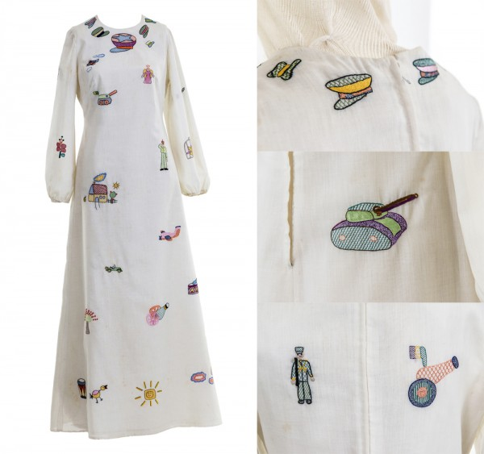

Quem é essa mulher que canta sempre esse estribilho?

Zuleika de Souza Netto (Curvelo, 5 de junho de 1921), conhecida como ZUZU ANGEL, foi uma importante estilista brasileira, além de incansável oponente à violência do governo militar brasileiro.
Personagem notória do Brasil na época da ditadura militar, ficou conhecida nacional e internacionalmente não apenas por seu trabalho inovador como estilista de moda, mas também por sua procura pelo filho, militante, assassinado pelo governo e transformado em desaparecido político, em que enfrentou as autoridades da época e levou sua busca a se tornar conhecida no exterior.
No final dos anos 60, Stuart Jones, filho de Zuzu e então estudante de economia, passou a integrar as organizações de esquerda que combatiam a ditadura militar no Brasil, filiando-se ao MR-8, grupo guerrilheiro socialista no Rio de Janeiro. Preso em abril de 1971, Stuart foi torturado e morto com requintes de crueldade pelo Centro de Informações da Aeronáutica (CISA) no aeroporto do Galeão e dado como desaparecido pelas autoridades.
A partir de então, Zuzu Angel travou verdadeira guerra contra o regime militar brasileiro, buscando informações sobre o assassinato de seu filho bem como reclamando o direito de sepultá-lo. Zuzu lançou mão de todos os mecanismos a que tinha acesso para gritar a verdade sobre o acontecido, envolvendo inclusive os Estados Unidos, país de seu ex-marido e pai de Stuart.
Como estilista, ela criou uma coleção estampada com manchas vermelhas, pássaros engaiolados e motivos bélicos. O anjo, ferido e amordaçado em suas estampas, tornou-se também o símbolo do filho. Em setembro de 1971, ela chegou a realizar um desfile-protesto no consulado do Brasil em Nova York, tecnicamente território brasileiro, que foi pego de surpresa pelo tema. Em 15 de setembro daquele ano, sua luta chegava aos jornais internacionais, com a manchete no canadense The Montreal Star: "Designer de moda pede pelo filho desaparecido". Cinco dias depois era a vez do Chicago Tribune trazer a manchete "A mensagem política de Zuzu está nas suas roupas".
A estilista frequentava à época a casa de Chico Buarque para amntê-lo informado sobre sua luta, mostrando-lhe relatórios e notícias. Numa dessas vezes, deixou para o compositor um bilhete no qual descrevia ter recebido um documento que detalhava as torturas sofridas por seu filho, bem como dizia que se algo ruim lhe acontecesse, seria por obra dos assassinos de seu filho.
"Se algo vier a acontecer comigo, se eu aparecer morta, por acidente, assalto ou outro qualquer meio, terá sido obra dos mesmos assasinos do meu amado filho."
Zuzu morreu em 1976, no que a ditadura classificou como um acidente automobilístico na saída do túnel Dois Irmãos, em São Conrado (RJ).
Em 1998 a Comissão Especial Sobre Mortos e Desaparecidos Políticos julgou o caso e reconheceu o regime militar como responsável pela morte da estilista. Segundo depoimentos, ela teria sido jogada para fora da pista por um carro pilotado por agentes da repressão. Hoje, o túnel é chamado Zuzu Angel.
Somente em 2019, sua filha Hildegard Angel pode finalmente emitir as certidões de óbito de sua mãe, Zuleika, e de seu irmão, Stuart com as causas reais de suas mortes, atestadas como "morte não natural, violenta, causada pelo Estado brasileiro, no contexto da perseguição sistêmica e generalizada à população identificada como opositora política ao regime ditatorial de 1964 a 1985".
Em 1977, Chico Buarque escreveu e gravou a canção Angélica em homenagem a Zuzu Angel.
{sobre a autora}
Joana Couto Maciel, 27 anos, mineira de Belo Horizonte, quase-ex-advogada e aluna da 5ª turma online de front-end da {reprograma}
{veja mais sobre mim}